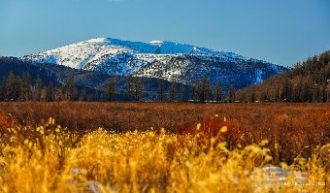

Стой!Пока ещё не выключен свет. Я хочу услышать ответ,Скажи, зачем мы по кругу...Друг от друга? Вот и всё!
На закате дня навей мне сны мимозИ укрой меня покровом летних грозИ на облаке белом укачайНазови меня русалкой в море тьмы
Турэл Буряадайм Байгал далайТуби дэлхэйгээр суурханхай,Эбхэрмэ гое долгинуудааЭрье дээгуур сасана.
Hiç güvenme gençliğine, güzelliğineSana zaman tutan kader İyiliğineKaybedersin sonunda kibrine düşüp,Sadece senin sandığın özelliğine...
По деревне волгу кручу, куда хачу туда качу.На селе проблем у нас нет, потому что я сельсовет.
Я над землёй к небу лечу.Тебя рядом нет. Я к тебе хочу,Прикоснутся к твоей щекеИ вновь исчезнуть вдалеке.Радость - печаль, огонь и вода,
Санахын эрхээр чамдааЗахидал бичиж суунаСан байна уу хайрт миньГэж зурхэндээ шивнэлээХуссэн сэтгэл мөрөөдлийн хязгааргуй ч
It's hard to remember how it felt beforeNow I found the love of my life...Passes things get more comfortableEverything is going right

Эрвэлзэнхэн дэрвэлзэнхэн зүүдлээд байна дааЭрдэнсийн өлгий нутаг миньСанагалзанхан санагалзанхан бодогдоод байна даа
Under a silver moon, tropical temperatureI feel my lotus bloom, come closerI want your energy, I want your auraYou are my destiny, my mantra
Осталось пять минут, мне пора уже идти.Курят и молчат мои друзья.Знаю, что поймут то, что ты должна прийтиНепременно проводить меня.
Где ж ты, мой свет, бродишь, голову склоня?Дай же ответ, что не позабыл меня.Ведь писем нет вот уже четыре дня,Милый, не греши, напиши!
Ты понять меня всё пытаешьсяИ найти во мне что-то главноеА когда опять ошибаешьсяГоворишь что я очень странная.
Дождик случайный, ночь синеокаЯ так печальна и одинокаСправа и слева - скучное местоЯ королева без королевстваСправа и слева - скучное место
ooooo-oo-oo-oo-ooooAlt du gjør stiller meg i transe,jeg blir glad kjenner kroppen danse,det ekke bare bare det.
Я дарю печальный свой взгляд тебе,Он может всё рассказать,Он должен всё объяснить сейчас!Посмотри, как звёзды глядят с небес,Им одиноко там,
В плену немыслимых идей,Теряя облик, словно тень,Найду свой путь из мира грёзИ растекусь рекой из слёз.Когда рассвет сменяет закат,
Я проснулась сегодня с утра.Меня разбудил шум дождя из окна.Танцевала всю ночь я самаДо утра!Нет силы.Я просила,
Oko me tvoje več kot eno uro gledaSprašuješ me če bom pijačo ja sevedaPa mogoče rečem da dadi ladiSprehajali be se po meni tvoji prsti
Две планеты - части света.Ты как осень или лето.Разделяют нас сюжеты наших дней.Разлетимся на осколки.Прошлого все стёрты плёнки.